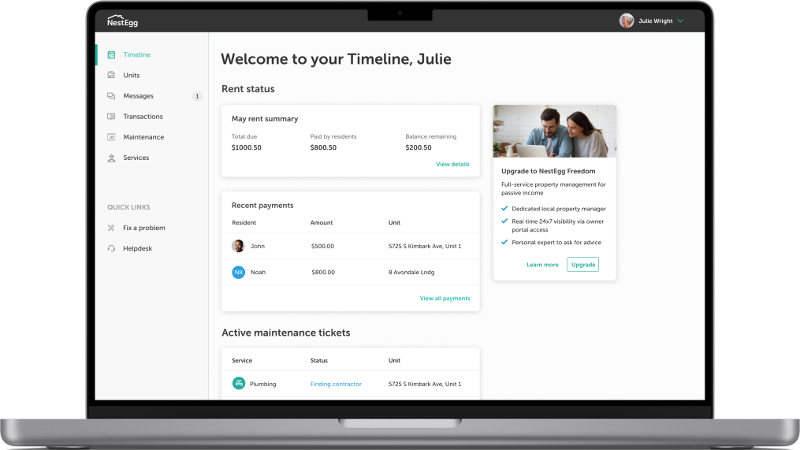
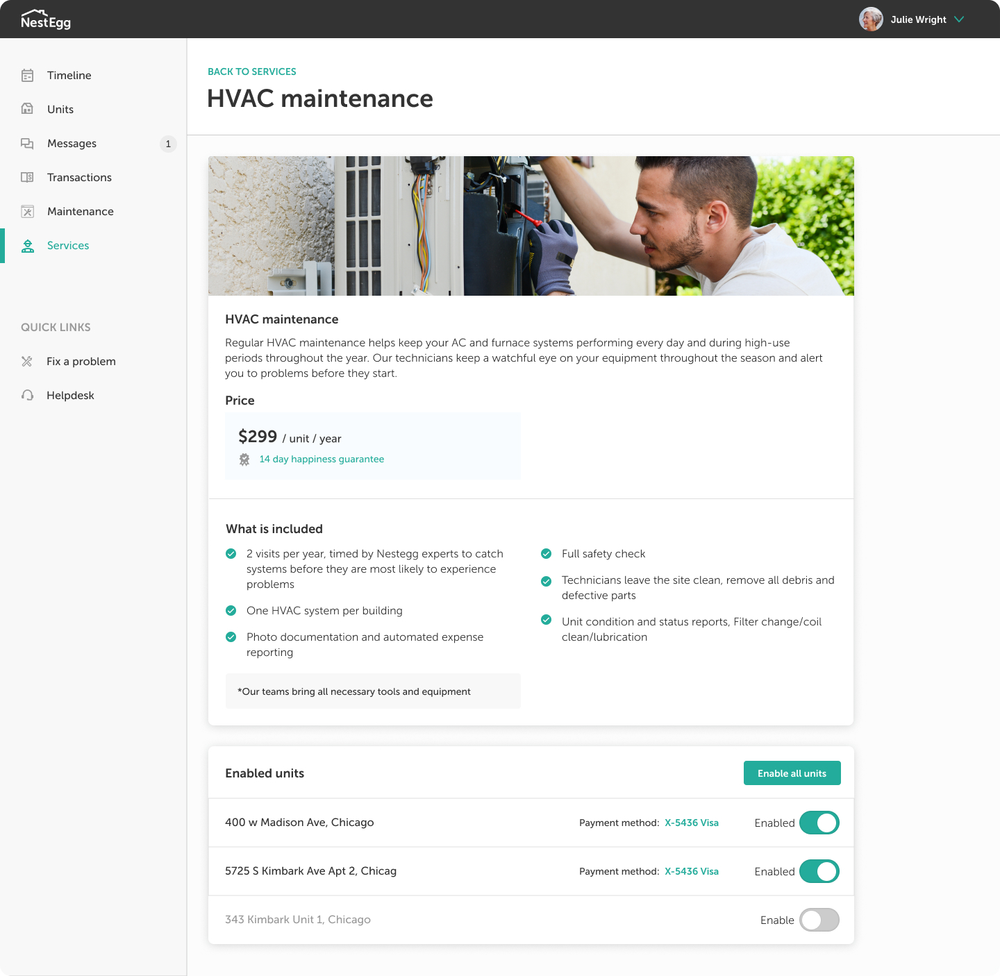
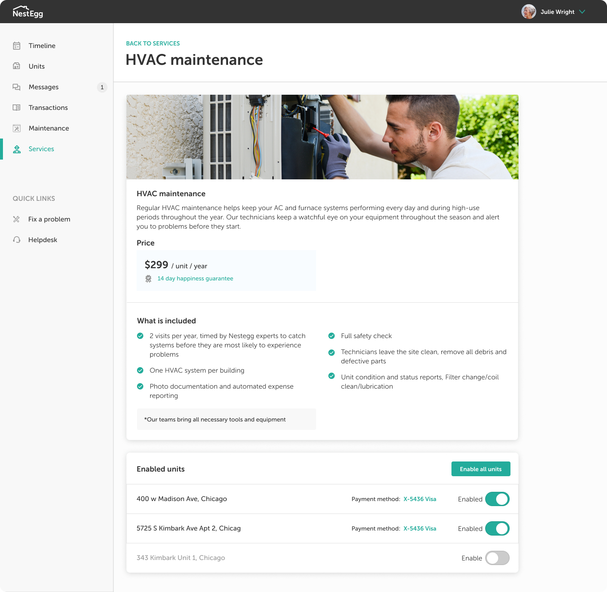

Timeline Redesign
Problem statement: Our timeline / landing page isn't useful to our users.
Old timeline

Usability issues:
Initially, the timeline was supposed to be the one-stop shop for users to check the status of their properties: Check rent-collection progress, view maintenance requests, and get notified about any other changes to their portfolio. However, our metrics showed that users were completely ignoring the timeline. Our research uncovered the following problems:
- Notifications could quickly pile up, making the timeline overwhelming and unusable
- Many users wanted a quick, at-a-glance way of viewing their rent status.
New dashboard
To ameliorate these issues, I created a dashbaord that had fixed-size modules which gave an at-a-glance viwe that would speak to the three main use-cases that users came to NestEgg for: 1) checking the status of their rent collection, 2) dealing with maintenance issues, and 3) viewing new messages from their residents.
 
